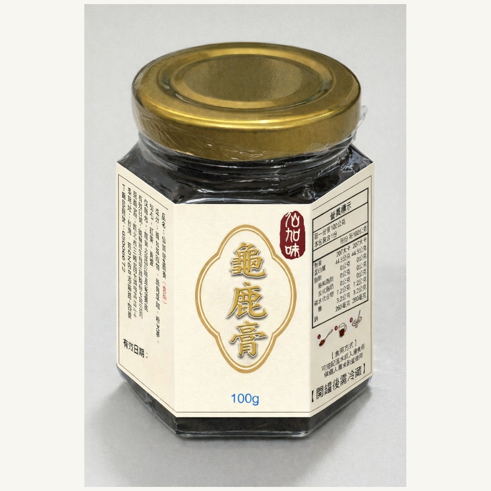
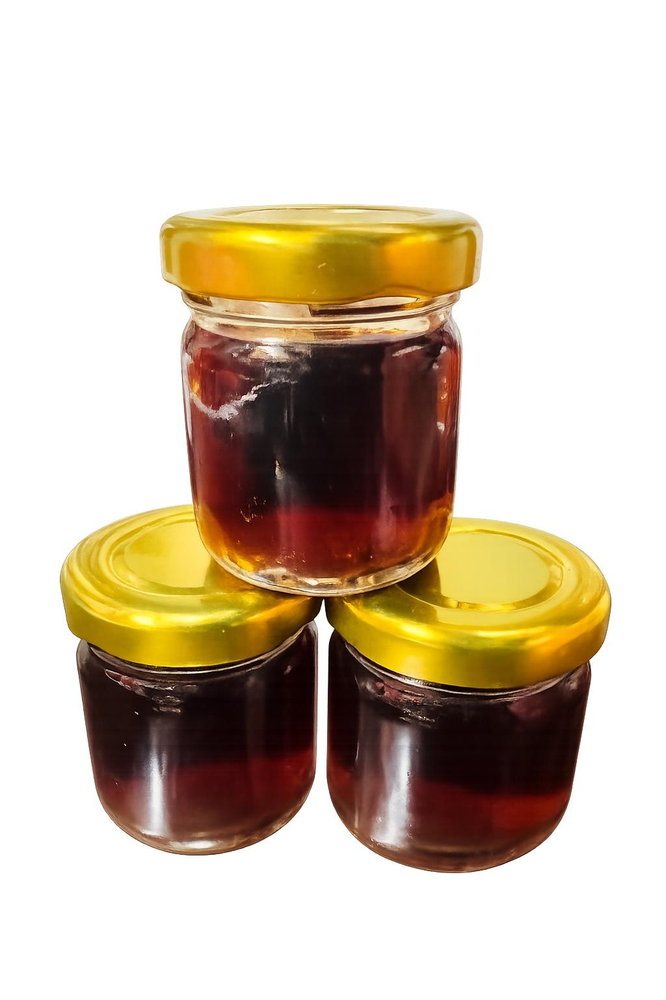

主品牌為仙加味，龜鹿系列為核心產品線；副品牌柒玄茶則以草本茶品與龜鹿調飲粉為主。
仙加味・龜鹿收錄龜鹿膏、龜鹿飲、龜鹿湯塊與鹿茸粉；柒玄茶則延伸日常草本調飲使用。

濃縮膏狀型態，可直接食用，也可加入溫水沖泡，亦可搭配粥品。

液態型態，開封即可飲用；若偏好溫熱口感，也可隔水加熱後再飲用。

入門規格，常見用於燉雞湯、排骨湯與保溫壺沖泡飲。

日常規格，常見用於燉雞湯、排骨湯與藥膳湯品。

長期食用規格，適合規律燉煮與家庭使用。

粉末型態，可加入溫水沖泡，也可作為粥品或料理的日常搭配方式。

可加入茶、咖啡或其他熱飲中飲用，作為日常草本調飲。
先看型態，再看使用方式，最後依飲食習慣與料理方向選擇。
| 產品 | 型態 | 常見方式 |
|---|---|---|
| 仙加味龜鹿膏 | 膏 | 直接食用、沖泡、粥品 |
| 仙加味龜鹿飲 | 液態 | 即飲、隔水加熱 |
| 龜鹿湯塊 75g | 湯塊 | 沖泡、燉湯 |
| 龜鹿湯塊 300g | 湯塊 | 雞湯、排骨湯 |
| 龜鹿湯塊 600g | 湯塊 | 長期燉煮使用 |
| 仙加味鹿茸粉 | 粉 | 沖泡、料理、粥品 |
| 產品 | 定位 | 常見方式 |
|---|---|---|
| 柒玄茶・龜鹿調飲粉 | 草本調飲 | 加入茶、咖啡或其他熱飲 |
所屬產品線：仙加味・龜鹿
規格：100 g
濃縮膏狀型態，可直接食用，也可加入溫水沖泡，亦可搭配粥品。
所屬產品線：仙加味・龜鹿
規格：180 cc／包
液態型態，開封即可飲用；若偏好溫熱口感，也可隔水加熱後再飲用。
所屬產品線：仙加味・龜鹿
規格：75 g／盒（8塊，每塊約 9.375 g ± 5 g）
入門規格，常見用於燉雞湯、排骨湯與保溫壺沖泡飲。
所屬產品線：仙加味・龜鹿
規格：300 g／盒（傳統紅盒）
日常規格，常見用於燉雞湯、排骨湯與藥膳湯品。
所屬產品線：仙加味・龜鹿
規格：600 g／盒（傳統紅盒）
長期食用規格，適合規律燉煮與家庭使用。
所屬產品線：仙加味・龜鹿
規格：75 g
粉末型態，可加入溫水沖泡，也可作為粥品或料理的日常搭配方式。
所屬產品線：柒玄茶
規格：單包調飲型
可加入茶、咖啡或其他熱飲中飲用，作為日常草本調飲。